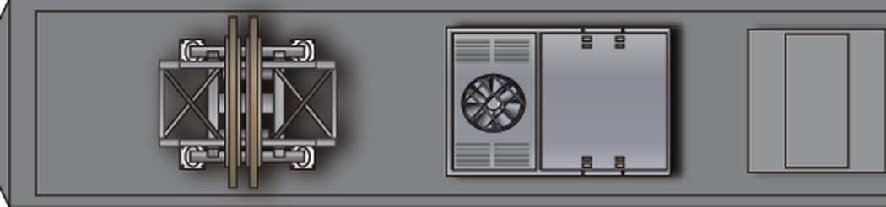
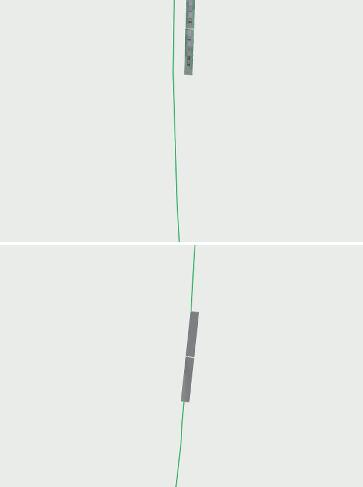
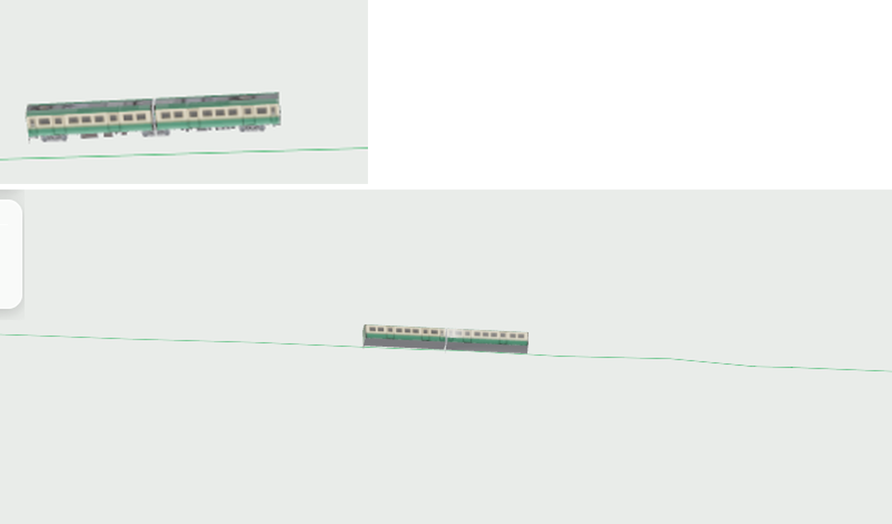
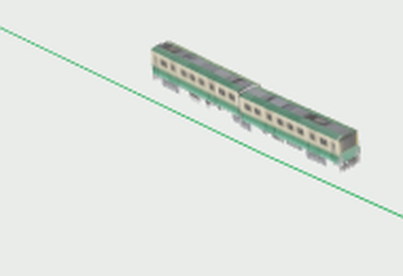
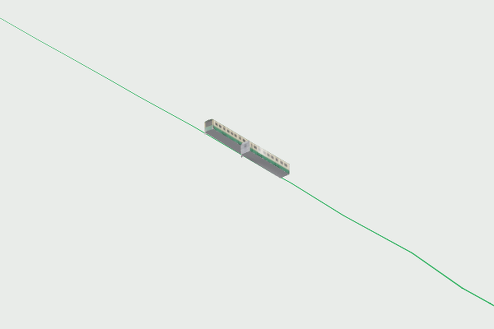

一句话结论
墙修复（c2ed463）之后纸模还是“一面墙”，但原因不是面内外翻了、不是修复没覆盖到、不是缓存没生效。真正的原因是：纸模车顶贴图在单面（FrontSide）渲染下不显——俯视是一块无细节的灰板；改成双面（DoubleSide）后，车顶清晰显示受电弓 / 空调 / 面板贴图。同车次 A/B（trip 2591）已证实：同车次、同压暗 0.85、仅 side 设置不同，车顶贴图的有无就翻转。高精度东急 5050 在 FrontSide 下车顶正常，故为纸模特有。机理未完全解明（诚实标注），但效果可复现。
三项已排除
| 怀疑 | 实测结果 |
|---|---|
| ① 线上不是修复版（缓存/部署） | 远端 HEAD c2ed463；线上 train3d.js 含 fixRoofMat×3、阴影 3.2、0.45、WALLFIX×4，CDN 完好；首页 maptest2、index.json 636 个。MC 14:54 看到的就是修复版，不是旧代码。 |
| ② 面内外翻了（绕序反了） | 全量实测 500 纸模、1,109 个 GLB、12,020,009 个三角形，绕序与法线不一致的为 0 个。车顶法线 100% 朝上、前/后端面朝外、底朝下。GLB 不是内翻壳，剔除行为正常。“内外翻转”假说被证伪。MC 的“反面”感受是视觉层级倒置造成的错觉，不是几何反转。 |
| ③ 修复覆盖面不够 | 修正扫描口径后（consist.json 有 model / file / id 三种写法，初版漏了后两种），495/500（99%）纸模命中车顶压暗。仅 5 辆不命中（见下表），解释不了“全部纸模都有问题”。 |
不命中的 5 辆：jr-hokkaido-kiha283（车顶叫 c1_roof / c2_roof）、tukubaexpress-tx1000（roof_h / roof_m）、nagasakidenki-3000（无独立车顶材质）、kagoshimasiden-9500 与 kobesinkotu-portliner8000（车顶材质无贴图）。方案 C 可顺手覆盖其中 4 辆。
真正原因：视觉层级倒置，不是几何反了
纸模车顶即使压暗 0.85，侧视仍只是一条约 4 px 的浅灰边（对比度 16→33–60，仍远低于高精度车顶深灰面约 130+ 的对比度）；俯视是一块无细节的均匀灰板。而车底深色带（dark 材质 + 阴影）始终最显眼。结果是“该看见的顶看不见，不该突出的底最突出”——观感上正是 MC 说的“只显示了视角看不到的那几面”。c2ed463 的压暗方向没错，但力度太弱，且没解决车顶贴图在 FrontSide 下不显的根本问题。
车顶贴图本身是细致的——从 GLB 抽出的 roof1.png 含受电弓、空调机组（带风扇）、面板、深色边框，并非纯色。俯视下它本应清晰可见：

江之电 1000 的车顶贴图（GLB 内 roof1.png）：受电弓、空调机组、面板、深色边框俱全。问题不在贴图本身，在它于地图 FrontSide 下渲染不出来。
决定性 A/B：俯视（同车次 trip 2591）

✅ 决定性对照：上（DoubleSide）车顶清晰显示受电弓 / 空调 / 面板贴图；下（FrontSide）车顶是一块无细节的均匀灰板。车次 / 位置干扰已排除——side 设置是车顶贴图显 / 隐的决定因素。
决定性 A/B：侧视（同车次 trip 2591）

✅ 侧视也有改善：上（DoubleSide）车顶为清晰深色条，且能看到转向架，不再是一整条实色底带；下（FrontSide）车顶 faint、底下是一整条实色深灰底带——典型“一面墙 + 底”。
斜 45°：DoubleSide vs FrontSide（同车次 trip 2591）

上：DoubleSide——车顶呈深灰面（带设备细节），整车有立体感，能看到转向架。

下：FrontSide（现状）——车顶是一块灰板、底带最显眼，仍是“一面墙 + 底”。
✅ 斜视角是 DoubleSide 改善最明显的角度：车顶从灰板变成带设备细节的深灰面，车厢恢复为“顶 + 侧墙 + 转向架”的完整形态。
下一步方案（均未实施、未推送）
- A（最优先）：纸模材质改 DoubleSide（保留车顶压暗 0.85）——只改
app/train3d.js，渲染侧、不动模型，不违反 11:53“不改模型”禁令；可与 0.55 压暗叠加。先在测试站推一版、发前后对比请 MC 看。 - B（备选/补充）：压暗加码到 0.55 + 阴影降到 0.25——单用治不了贴图不显（strong 俯视仍是灰板），只能作为 A 的补充。
- C（附带）：放宽车顶材质匹配，覆盖剩余 5 辆——正则改为匹配一切含
roof的材质名，并对无贴图车顶也压暗。可与 A 合并做。 - D（产品级）：改地图默认视角 pitch 60 → 45–50——让车顶面投影更大；但改变全站默认视角、影响所有车型与用户习惯，需 MC 定夺；且用户自己转到纯侧视时问题依旧。
- E（改模型）：给纸模车顶加 3D 受电弓 / 空调——唯一能在纯侧视下也立体的办法，需 MC 松口 11:53“不改模型”禁令；工作量大（500 辆）。
不建议：小幅加码压暗（0.8 / 0.75，实测改善有限）、BackSide 作修复（侧视会渲染成远侧内壁，是反效果）、只收阴影（不解决车顶不显）。
更正：前次诊断曾写“DoubleSide 已排除、对一面墙无效”。本次实测推翻了这一条——DoubleSide 现为首选方案 A。机理未完全解明：按文件分析车顶是单层、法线 100% 朝上、带贴图，FrontSide 从上方理应正常显示，但实测就是灰板；可能与地图强顶光洗亮或 three.js 侧未查出的材质细节有关。无论机理如何，实测效果可复现。
等 MC 定夺
本页所有变体（DoubleSide / BackSide / 强压暗）均为本地试验、未上线，测试站线上仍是 c2ed463（阴影 + 车顶压暗 0.85）。要不要先在测试站推一版 DoubleSide（方案 A），看 live 效果再定？回“推”就行。若只想要其中某项（比如 A + B 叠加、或 A + C 一起），直接说。
测试站：https://ooep.github.io/jr3d-maptest/ ｜ 复诊报告全文：~/workspace/jr3d/work/main-site-map-wall-redx-20261126/REDX.md